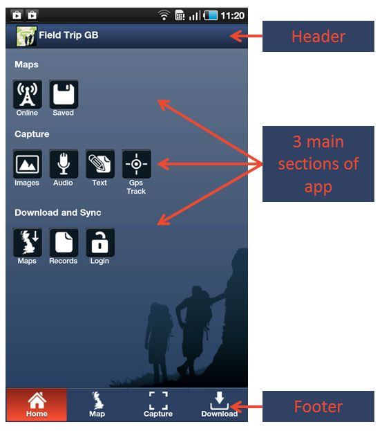
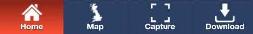
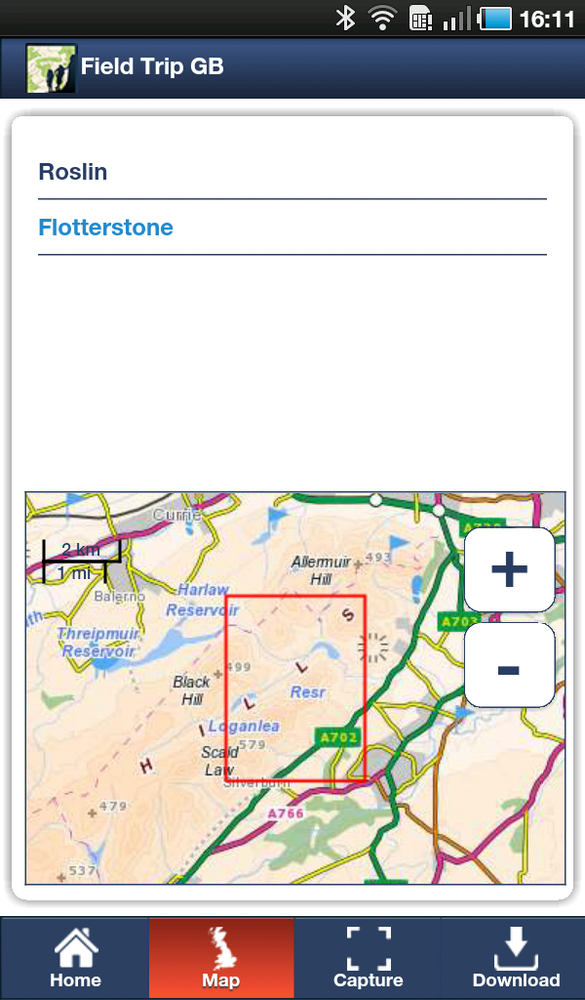

GETTING STARTED
This page provides a brief overview of the FieldTrip GB app. It is designed to familiarise new users with the layout of the app and its main features. Lets have a look at the Home screen of the app (Fig 2.1).
Fig 2.1 - Home Screen
The Home Screen allows you to quickly navigate to the 3 main sections of the app; Maps, Capture and Download. Quick navigation links are available in the app footer (fig 2.2). The app header will change depending on what section of the app you are in and will contain relevant icons and buttons such as Search; Locate Me, GPS indicator.
 Fig 2.2 - App Footer
If you wish to return to the Home Screen at any point, simply tap the Home Button in the footer (fig 2.2). We will go through the sections in turn.
Map -
Fieldrip GB allows you to view maps through an active network connection (3G/WiFi) or to view maps that you have already saved to to your device. On the Home screen there are icons for Online and Saved. Tapping Online will take you to the main map interface where there are a number of controls around the screen that allow users to:
Pan the map - Touch and drag the map to centre it on a new location.
Zoom in/out - You can either use Two-Fingered pinch zoom gestures or the +/- buttons to zoom in and out.
Centre the map on your location - You can centre the map on your current GPS location by tapping the button.
Search for a placename - You can access a placename gazeteer by pressing the button.
Show/Hide Records - You can choose to show, or hide, records by pressing the button. This is really useful when previous records are cluttering or obscuring the map.
Fig 2.3 - Map control Buttons
Saved Maps
Saved maps allow you to view maps when you do not have a mobile network connection or when you do not want to use your data allowance. Saved maps are ideal when using FieldTrip GB in remote locations such as the Lake District or the Scottish Highlands where mobile reception is patchy.
When you tap the Saved maps icon you will see the following screen (fig 2.4). The list at the top shows the maps that you have saved and displays the name they were saved with. To select a map to use, just tap it and the preview in the lower half of the screen will update to show the extent of the saved map (red rectangle).
 Fig 2.4 - Saved Maps screen
Once you are happy that you have selected the correct map, touch the Map button at the base of the screen and you will be taken to the Map Screen with the saved map loaded. CHECK - to make things easier when working "off-line", we have pre-loaded some overview mapping with the app.
To find out how to download and save maps for use offline, please refer to Saved Maps Page.
Capture Data -
This section of the app will allow you to capture data in the field. You can use the basic capture forms provided with the app, or create custom data capture forms through the Feildtrip GB Web based Authoring tool.
More information about Capturing data an be found on the Capture Page.
Download and Synch -
The download page allows users to:
download maps for offline use. Sometimes there is poor, or no, mobile 3G network coverage. Users can download maps to their device prior to heading out into the field. This has the advantage of not eating into users data allowance. For more information, please refer o the Saved Maps Page.
download records - users can download records that they have captured so that they can access it on their computers. Records are uploaded from the device to the users DropBox account and can then be accessed from there. More information on the use of DropBox (other storage providers) can be found here.(LINK)
log in / Log out - The log in button allows users to access their Cloud Storage area so as to download forms to the device and upload captured data from the device
synch - once logged in, the synch button appears and this will activate the synchronisation between the device and your Cloud Storage folder.